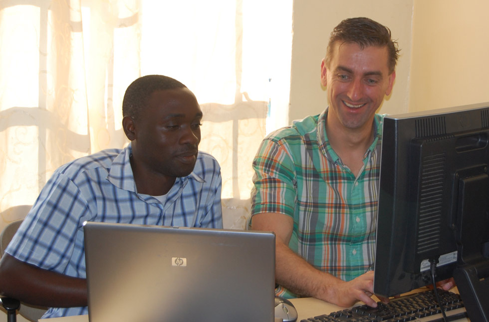

Van papier naar een systeem dat draait.
Betere administratie betekent beter inzicht: waar gaan medicijnen heen, wie heeft betaald, en welke ziektes komen het vaakst voor.
Een ziekenhuis dat zijn eigen gegevens kent
Rubya heeft drie mensen in dienst voor internet en automatisering. Een lokaal netwerk is opgezet en een internetverbinding aangelegd. Het medisch registratiesysteem heet GoT-HoMIS, van de Tanzaniaanse overheid. De Nederlandse firma Van Gelder B.V. uit Elburg stelt laptops, servers en andere apparatuur gratis ter beschikking.
Fase 1 (gefinancierd door Rotaryclub Oldebroek-Elburg) verbond kantoor, afdelingen, polikliniek en apotheek. Dat leverde direct besparingen op: men kon beter nagaan hoeveel medicijnen werkelijk werden gebruikt, en omdat alle patiënten digitaal worden ingeschreven en de rekeningen geprint, wordt beter betaald.
Hoe het is gegaan
De eerste stap
Patiëntengegevens, receptuur en uitgifte van medicijnen en het beheer van de pharmacy worden geautomatiseerd.
Het ziekenhuis wordt een netwerk
Kantoor, afdelingen, polikliniek (OPD) en apotheek zijn met elkaar verbonden.
Internet en een nieuwe server
Internet in het kantoor, bij de dokters en in de school, plus een internetcafé en een sterkere server met dagelijkse back-ups.
Bijna alles digitaal
Ziekenafdelingen, OK, OPD, röntgen en laboratorium zijn aangesloten. Alle recepten en betalingen gaan digitaal, met een ontvangstbewijs per patiënt. Een digitale prikklok en enkele beveiligingscamera's zijn geplaatst.
Aangesloten op het overheidsnetwerk
Van het oorspronkelijke programma Allsee naar het netwerk van het Ministerie van Gezondheidszorg: recepten tijdens de visite, financiële administratie, online weekrapporten en medicijnen bestellen bij de groothandel.
Foto's uit Rubya
Techniek die levens ondersteunt
Met uw gift helpen we Rubya om de laatste afdelingen te digitaliseren en het systeem draaiend te houden.
NL66ABNA0624513211t.n.v. Stichting Vrienden van Rubya · BIC ABNANL2A